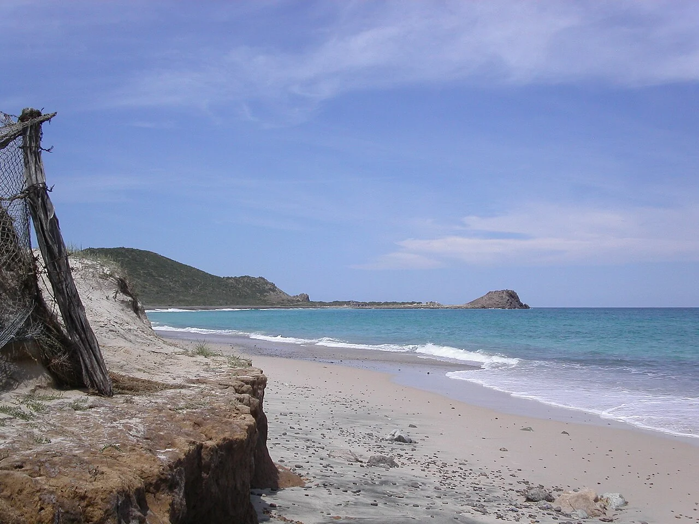

Cabo Pulmo
Basse-Californie du Sud, Mexique · plongée, snorkeling

Sur la côte est de la Basse-Californie du Sud, Cabo Pulmo abrite un parc national marin. La plongée et le snorkeling permettent de découvrir ses récifs avec les opérateurs autorisés.
- Lieu
- Basse-Californie du Sud, Mexique
- Niveau
- Variable selon les conditions
- Activités
- plongée, snorkeling
- Type d'eau
- Mer / océan
- Coordonnées
- 23.44, -109.43 (position approximative du secteur)
Ouvrir dans Ocean Buddy Télécharger sur l'App Store
Source : Wikipédia · géographie du lieu.